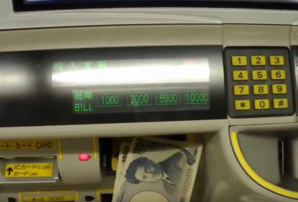
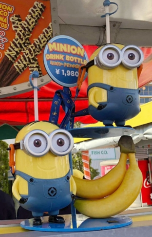
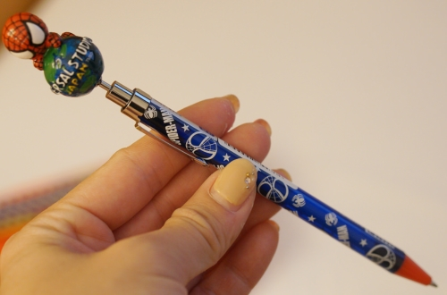
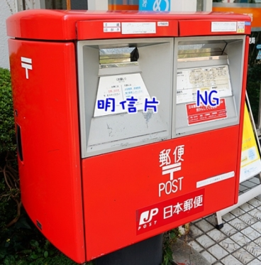
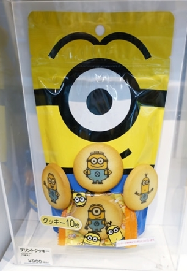
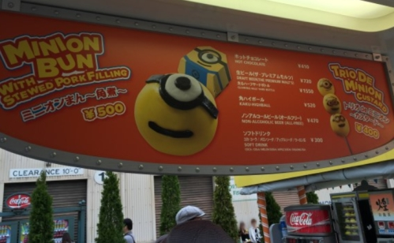

※Ishida 本店步行至三宮分店示意圖
Ishida 本店 [官網]
營業時間
午餐 11:30~15:00(L.O.14:30)
晚餐 17:00~23:00(L.O.21:30）
本店位於此棟3F 只有35個座位

菜單


有黑色的圍兜兜

神戶牛烤肉 (要加800才有, 網路不推)

蔬菜沙拉

左B餐 右A餐

牛肉上桌前店家會詢問是否share
如果 是 不同人點的肉 都會先上小小一份在同一個盤子裡
由左到右 酥蒜片、薑泥(搭配醬油使用)、海鹽、玫瑰鹽、黑胡椒
搭配粗海鹽或是玫瑰鹽或是酥蒜片都一絕

店家會問你要レア(Rare)還是ミディアム (medium)
レア(Rare)是表面煎過中間比較生，大約是五分熟的程度，
ミディアム (medium)是表面煎過中間有透熟的樣子，應該接近七八分熟，
建議五分熟會比較好一些
烤蔬菜 蒟蒻、豆芽、秋葵、茄子、馬鈴薯

蒜香米飯 (要加500才有)

星巴克

鳴門鯛燒本舖 TABELOG 3.5美食 [官網]

「小倉餡」就是紅豆餡, 選用北海道十勝產的紅豆, 和入圍日本名水百選的大嶺山天然水製作
「鳴門金時餡」番薯餡. 生產自四國德島縣的鳴門市, 因為番薯品質極佳, 價錢較高